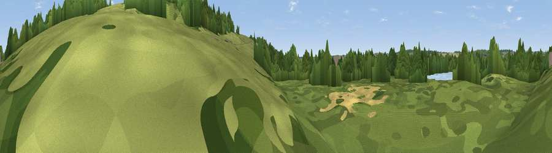

Viewpoint near Hill End
#45615 in England · top 84% of its area beats it · near Hill End · access?Where it is
The exact computed spot (TQ 04219 92460). Click the marker for map links.
Public access: no public right of way or access land is recorded at this exact spot — it may be on private land. Computed from Natural England's CRoW access layer and OpenStreetMap rights of way — not the legal definitive map. Always verify locally.
The view, rendered

A 360° render of this exact spot computed from the terrain model, tree cover and land cover — summer colours, afternoon light, calibrated against photographs of famous viewpoints. Real trees, hedges and buildings will differ in detail.
The panorama
Grey silhouette: terrain skyline in each direction (720 bearings, Earth curvature and refraction included). Dashed green: skyline with trees (+15 m) and buildings (+8 m) as obstacles. Blue strip: how far the ground is visible on each bearing.
Where the view opens
Wedge length = distance to the farthest visible ground on that bearing (vegetation-aware). Rings at 10, 25 and 50 km.
What fills the view
45% grassland · 38% woodland · 11% cropland · 5% built-up · 1% bare ground
Angular shares of the visible panorama (visual magnitude), not map area. Landscape diversity 0.51 (0–1 Shannon).
Key numbers
More beautiful places nearby
The staircase of upgrades: each row has a higher view potential than everything closer. Driving times are estimates from straight-line distance, calibrated against real road routing — check an actual route before setting out.
| Place | Direction | Drive | Score |
|---|---|---|---|
| Viewpoint near Hill End | NE · 1 km | ~2 min | 18.9 |
| Viewpoint near Harefield | S · 2 km | ~6 min | 19.4 |
| Batchworth Heath | E · 4 km | ~9 min | 25.0 |
| Viewpoint near South Harefield | SSE · 5 km | ~12 min | 29.6 |
| Viewpoint near Hayes End | SSE · 11 km | ~21 min | 37.6 |
| Harrow on the Hill | ESE · 12 km | ~23 min | 42.3 |
| Viewpoint near Tring | NW · 21 km | ~36 min | 50.3 |
| Viewpoint near Tring | NNW · 22 km | ~36 min | 55.1 |
51.62132, -0.49597 · source: osm viewpoint · position refined by local search. Computed location — check access rights before visiting.